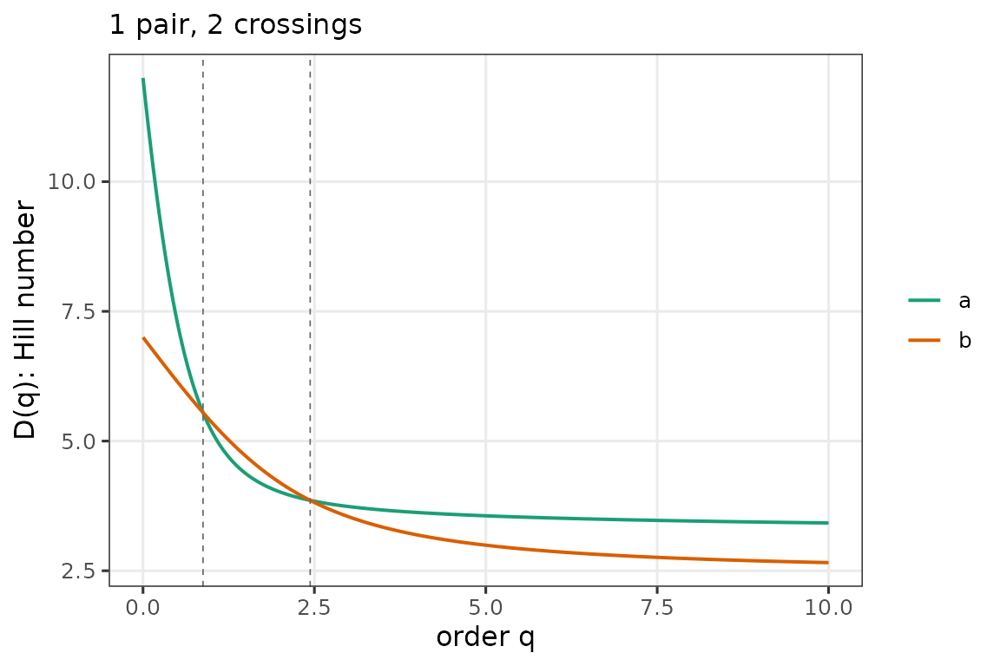

Two party systems can share an effective-number-of-parties value and
yet look nothing alike at the ends of the profile.
crossings() detects the q values where one system overtakes
the other.
The example below uses the paper’s canonical case — Netherlands 1982 vs. Sweden 2002. Both have ENP near 4, but the Dutch system has many small parties (steep profile) while Sweden has fewer, larger ones (flat profile), so the profiles cross twice.
# Party-labeled vectors. Column order is party identity (stable, e.g.,
# alphabetical within each system), NOT rank by size.
netherlands_1982 <- c(
PvdA = 0.313, CDA = 0.300, VVD = 0.240, D66 = 0.040,
PSP = 0.020, CPN = 0.020, SGP = 0.020, PPR = 0.013,
RPF = 0.013, GPV = 0.007, CP = 0.007, DS70 = 0.007
)
sweden_2002 <- c(
SAP = 0.415, Moderata = 0.156, Folkpartiet = 0.138,
Kristdemokraterna = 0.096, Vansterpartiet = 0.086,
Centerpartiet = 0.063, Miljopartiet = 0.046
)
c(enp_nl = enp(netherlands_1982), enp_se = enp(sweden_2002))
#> enp_nl enp_se
#> 4.018420 4.196356
cr <- crossings(netherlands_1982, sweden_2002, q = seq(0, 10, 0.01))
cr
#> <crossings: 1 pair, method = interp>
#> i j id_i id_j n_crossings first_q
#> 1 2 a b 2 0.8758609
plot(cr)
Dataset-wide scans
For large comparisons, method = "signchange" is cheap
and robust. The rows below are draws from an asymmetric Dirichlet — a
stand-in for real party-labeled compositions; the point is that each row
is a single party system, and the crossings() call treats
each row as its own system without any sorting assumption.
set.seed(1)
many <- t(replicate(8, { x <- rgamma(5, 0.8); x / sum(x) }))
colnames(many) <- paste0("Party_", LETTERS[1:5])
rownames(many) <- paste0("sys", 1:8)
cr_all <- crossings(many, q = seq(0, 5, 0.01), method = "signchange")
head(as.data.frame(cr_all))
#> i j id_i id_j n_crossings first_q
#> 1 1 2 sys1 sys2 0 NA
#> 2 1 3 sys1 sys3 0 NA
#> 3 1 4 sys1 sys4 1 0.055
#> 4 1 5 sys1 sys5 0 NA
#> 5 1 6 sys1 sys6 0 NA
#> 6 1 7 sys1 sys7 1 0.695